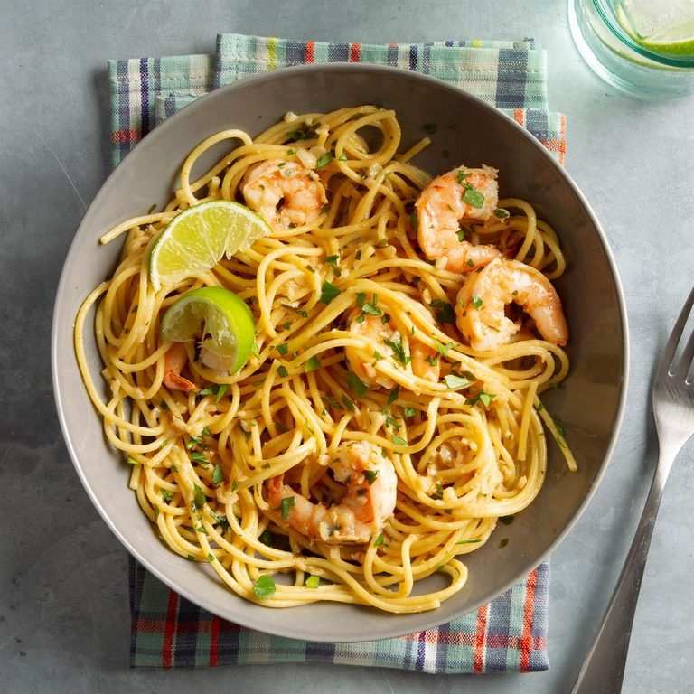

Garlic Lime Shrimp

Description:
A meal easy to do and healthy. Delicious with rice or bread, you can serve it as main course or entree.
Ingredients:
- 1 pound uncooked shrimp (31-40 per pound), peeled and deveined
- 5 garlic cloves, minced
- 1/2 teaspoon salt
- 1/4 to 1/2 teaspoon cayenne pepper
- 1/2 cup butter
- 3 tablespoons lime juice
- 1 tablespoon minced fresh parsley
- Hot cooked pasta
Steps:
- In a large skillet, saute the shrimp, garlic, salt and cayenne in butter until the shrimp turn pink, about 5 min
- Stir iin lime juice and parsley
- Sreve with paste
- Get ready to eat!!
Homepage